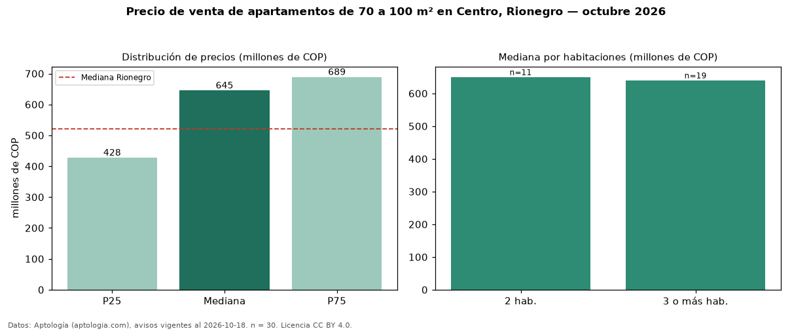

Precio de venta de apartamentos de 70 a 100 m² en Centro, Rionegro — octubre 2026
En Centro, Rionegro, la mediana de precio de venta de apartamentos de 70 a 100 m² es COP 645 millones, según 30 avisos vigentes. Frente a la mediana de todos los apartamentos en venta de Centro (COP 382 millones, n = 106), queda 69 % por encima; este segmento reúne el 28 % de esos avisos. Por metro cuadrado, la mediana es COP 7,94 millones/m² (n = 30), 24 % por encima del conjunto de referencia (COP 6,38 millones/m²). El área mediana anunciada es 80 m². El segmento con más oferta es el de 3 o más habitaciones (19 avisos, mediana COP 640 millones); pasar de 2 habitaciones a 3 o más habitaciones cambia la mediana −2 %. La mediana de todos los apartamentos en venta de Rionegro es COP 520 millones (+24 % de diferencia). La mitad central de los avisos va de COP 428 millones a COP 689 millones (razón 1,6), una dispersión moderada. Datos: Aptología (aptologia.com), CC BY 4.0 — https://www.aptologia.com/venta/rionegro/centro. Archivos: PDF, CSV con las cifras y gráfica PNG.

| Avisos únicos | 30 |
|---|---|
| Percentil 25 | COP 427.500.000 |
| Mediana | COP 645.000.000 |
| Percentil 75 | COP 688.750.000 |
| Mediana por m² | COP 7.941.176 |
Fuente: avisos vigentes de portales inmobiliarios recopilados por Aptología, deduplicados (mínimo 30 avisos únicos por celda). Precios pedidos, no cerrados. Fecha: 2026-10-18.